정보처리산업기사 (2008-03-02 기출문제)
1과목: 데이터 베이스
1. 데이터 모델은 일반적으로 3가지 구성 요소를 포함하고 있다. 이 구성 요소와 거리가 먼 것은?
- Structure
- Operation
- Constraint
- Method
(정답률: 81%)

2. 해싱 함수 기법에서 키 값을 양의 정수인 소수로 나누어 나머지를 홈 주소로 취하는 방법을 무엇이라고 하는가?
- 폴딩(Folding)법
- 제곱(Mid-Square)법
- 제산(Division)법
- 기사(Radix)변환법
(정답률: 68%)
3. 릴레이션의 특징으로 옳지 않은 것은?
- 모든 튜플은 서로 다른 값을 갖는다.
- 각 속성은 릴레이션 내에서 유일한 이름을 갖는다.
- 하나의 릴레이션에서 튜플의 순서는 없다.
- 릴레이션에 나타난 속성 값은 분해가 가능해야 한다.
(정답률: 79%)
4. 데이터베이스에서 사용되는 널 값(Null Value)에 대한 설명으로 옳지 않은 것은?
- 공백(Space) 또는 영(Zero)을 의미한다.
- 아직 알려지지 않거나 모르는 값이다.
- 이론적으로 아무것도 없는 특수한 데이터를 의미한다.
- 정보 부재를 나타내기 위해 사용한다.
(정답률: 87%)
5. 무결성 제약조건 중 어떤 릴레이션의 기본 키를 구성하는 어떠한 속성 값도 널(Null) 값이나 중복 값을 가질 수 없음을 의미하는 것은?
- 참조무결성 제약조건
- 정보무결성 제약조건
- 개체무결성 제약조건
- 주소무결성 제약조건
(정답률: 84%)
6. 데이터베이스는 어느 한 조직의 여러 응용 시스템들이 공용할 수 있도록 통합되고, 저장된 운영 데이터의 집합이라고 정의할 수 있다. 이 정의가 함축하고 있는 의미 중 효율성 증진을 위하여 불가피하게 최소의 중복(Minimal Redundancy) 또는 통제된 중복(Controlled Redundancy)을 허용하는 것으로 설명되는 항목은?
- 저장된 데이터(Stored Data)
- 공용되는 데이터(Shared Data)
- 통합된 데이터(Integrated Data)
- 운영 데이터(Operational Data)
(정답률: 68%)
7. 큐(Queue)에 대한 설명으로 옳지 않은 것은?
- 입력은 리스트의 한끝에서, 출력은 그 상대편 끝에서 일어난다.
- 운영체제의 작업 스케줄링에 사용된다.
- 오버플로우는 발생될 수 있어도 언더플로우는 발생되지 않는다.
- 가장 먼저 삽입된 자료가 가장 먼저 삭제되는 FIFO 방식으로 처리된다.
(정답률: 82%)
8. 다음의 산술식을 “Postfix” 표기로 옳게 나타낸 것은?
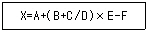
- X=A+B+C/D×E-F
- XABCD/+E×+F-=
- =X-+A×+B/CDEF
- XABCDEF=++/×-
(정답률: 76%)
9. 다음 자료를 삽입 정렬을 이용하여 오름차순으로 정렬할 경우 “Pass 2”의 결과는?
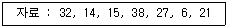
- 14,32,15,38,27,6,21
- 6,14,15,27,32,38,21
- 14,15,27,32,38,6,21
- 14,15,32,38,27,6,21
(정답률: 82%)
10. 데이터베이스 설계 순서를 바르게 나열한 것은?
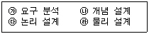
- 가→나→다→라
- 가→다→나→라
- 다→나→라→가
- 다→라→나→가
(정답률: 90%)
11. Which of the following is an ordered list in which all insertions take place at one end, the rear, while all deletions take place at the other end, the front?
- Queue
- Tree
- Stack
- Graph
(정답률: 79%)
12. SQL 명령을 사용 용도에 따라 구분할 경우, 그 용도가 나머지 셋과 다른 하나는 무엇인가?
- SELECT
- UPDATE
- INSERT
- GRANT
(정답률: 91%)
13. What's the explain next sentence?Choose the collect answer.
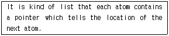
- Stack
- Graph
- Tree
- Linked List
(정답률: 69%)
14. 데이터베이스를 구성하는 데이터 객체, 이들의 성질, 이들 간에 존재하는 관계, 그리고 데이터의 조작 또는 이들 데이터 값들이 갖는 제약조건에 관한 정의를 총칭하는 것은?
- Entity
- Attribute
- Schema
- Interface
(정답률: 84%)
15. 시스템 카탈로그에 대한 설명으로 옳지 않은 것은?
- 기본 테이블, 뷰, 인덱스, 패키지, 접근 권한 등의 정보를 저장한다.
- 시스템 테이블로 구성되어 있어 일반 사용자는 내용을 검색할 수 없다.
- 시스템 자신이 필요로 하는 스키마 및 여러 가지 객체에 대한 정보를 포함하고 있는 시스템 데이터베이스이다.
- 자료 사전(Data Dictionary)이라고도 한다.
(정답률: 89%)
16. 개체-관계 모델(Entity-Relationship Model)에 대한 설명으로 적합하지 않은 것은?
- 1976년 P.Chen이 제안한 개념적 데이터 모델이다.
- E-R 다이어그램에서 사각형은 개체를 표현한다.
- E-R 다이어그램에서 개체와 관계, 속성 사이를 연결해 주는 것은 삼각형이다.
- E-R 다이어그램에서 마름모는 개체들 간의 관계를 나타낸다.
(정답률: 90%)
17. 해싱 기법에서 동일한 홈 주소로 인하여 충돌이 일어난 레코드들의 집합을 무엇이라고 하는가?
- Synonym
- Collision
- Bucket
- Overflow
(정답률: 72%)
18. 뷰(View)에 대한 설명으로 옳지 않은 것은?
- 삽입, 삭제, 갱신 연산의 용이
- 데이터의 논리적 독립성 유지
- 데이터 접근 제어에 의한 보안 제공
- 사용자의 데이터 관리 용이
(정답률: 77%)
19. 데이터베이스 설계 단계 중 물리적 설계 단계와 거리가 먼 것은?
- 저장 레코드 양식 설계
- 레코드 집중의 분석 및 설계
- 트랜잭션 모델링
- 접근 경로 설계
(정답률: 73%)
20. 다음의 자료 구조 중 나머지 셋과 성격이 다른 하나는?
- 스택(Stack)
- 트리(Tree)
- 큐(Queue)
- 데크(Deque)
(정답률: 88%)
2과목: 전자 계산기 구조
21. 부동소수점 표현의 수들 사이의 곱셈 알고리즘 과정에 해당하지 않은 것은?
- 0(Zero)인지 여부를 조사한다.
- 가수의 위치를 조정한다.
- 가수를 곱한다.
- 결과를 정규화한다.
(정답률: 58%)
22. 누산기(Accumulator)에 대한 설명으로 옳은 것은?
- 데이터를 누적하는 곳으로 기억 장치에 있다.
- 연산을 위한 중간 결과를 저장하는 곳이다.
- 필요한 연산을 실행하는 곳이다.
- 다음에 실행될 명령이 있는 주소를 가리킨다.
(정답률: 69%)
23. 인스트럭션 형식 중 자료의 주소를 지정할 필요가 없는 형식은?
- 1-주소
- 2-주소
- 3-주소
- 0-주소
(정답률: 82%)
24. 주소지정방식에서 기억장치를 가장 많이 Access 해야 하는 것은?
- Direct Addressing Mode
- Indirect Addressing Mode
- Index Addressing Mode
- Relative Addressing Mode
(정답률: 61%)
25. 다음 마이크로 오퍼레이션은 무슨 사이클에 해당하는가?(단, IEN: Interrupt Enable Flip-Flop, AR: Address Register, TR: Temporary Register, R: Interrupt Flip-Flop, SC: Sequence Counter)
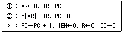
- Fetch Cycle
- Interrupt Cycle
- Indirect Cycle
- Execute Cycle
(정답률: 55%)
26. 논리회로 방식에 의한 제어기(Control Logic Unit)를 설명한 것 중 옳지 않은 것은?
- 고속 제어가 가능하다.
- 제어기의 변경이 쉽다.
- 하드웨어적인 방법으로 제어장치를 구성한다.
- 제어장치에 의해 제어신호를 발생한다.
(정답률: 59%)
27. 인터럽트(Interrupt) 체제의 기본적인 요소에 속하지 않는 것은?
- 인터럽트 요청 신호
- 인터럽트 상태(Interrupt State)와 DMA
- 인터럽트 처리(Interrupt Processing)
- 인터럽트 취급 루틴(Interrupt Service Routine)
(정답률: 58%)
28. 캐시메모리(Cache Memory)와 관련이 가장 적은 것은?
- 연관 매핑(Associative Mapping)
- 가상기억장치(Virrual Memory)
- 적중률(Hit Ratio)
- 참조의 국한성(Locality of Reference)
(정답률: 54%)
29. JK 플립플롭에서 J(n) = K(n) = 1일때, Q(n+1)의 출력 상태는?
- 반전
- 1
- 0
- 1 또는 0
(정답률: 73%)
30. 그림과 같이 병렬가산기의 입력에 데이터를 인가하였을 때 이 회로의 출력 F는 어떻게 되겠는가?
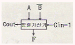
- 가산
- A를 전송
- A를 1 증가
- 감산
(정답률: 58%)
31. CPU가 명령어를 실행할 때의 메이저 상태에 대한 설명 중 옳은 것은?
- 실행 사이클은 간접주소 방식의 경우에만 수행된다.
- 명령어의 종류를 판별하는 것을 Indirect 사이클이라 한다.
- 기억장치내의 명령어를 CPU로 가져오는 것을 패치(Fetch) 사이클이라 한다.
- 인터럽트 사이클 동안 데이터를 기억장치에서 읽어낸다.
(정답률: 77%)
32. (-24)10을 부호화 절대치 방법에서의 1비트 좌측 시프트할 경우 올바른 것은?(단, 표현은 8 비트로 한다.)
- 11011110
- 0101110
- 10110000
- 01010111
(정답률: 66%)
33. 2진법의 수 (1101.11)2을 10진법으로 표시하면?
- 11.75
- 13.55
- 13.75
- 15.3
(정답률: 82%)
34. OP코드가 5비트, Operand가 11비트인 명령어가 갖는 최대 마이크로 연산의 종류는?
- 5개
- 32개
- 64개
- 2048개
(정답률: 67%)
35. 가상메모리(Virtual Memory)의 특징이 아닌 것은?
- 주소 변환 작업이 필요하다.
- 기억 공간의 확장을 위한 것이다.
- 기억 장치의 처리속도 향상을 위한 것이다.
- 보조기억장치의 접근이 자주 발생하면 시스템의 처리 효율이 저하될 수 있다.
(정답률: 51%)
36. 자기테이프에 대한 설명으로 옳은 것은?
- Direct Access가 가능하다.
- 출력 장치로만 사용된다.
- 각 블록 사이에는 간격(Gap)이 없다.
- 블록 단위로 데이터를 전송한다.
(정답률: 51%)
37. 다음 코드의 분류 중 그 연결이 옳은 것은?
- 자기보수코드 : 8421 코드
- 자기보수코드 : 2421 코드
- 가중치(Weighted) 코드 : 3-초과 코드
- 가중치(Weighted) 코드 : 그레이 코드
(정답률: 48%)
38. FLOATING POINT NUMBER에서 저장 비트가 필요 없는 것은?
- 부호
- 지수
- 소수점
- 소수(가수)
(정답률: 79%)
39. 자외선을 사용하여 기억된 내용을 지우는 소자는?
- UVEPROM
- EEPROM
- Mask ROM
- PROM
(정답률: 68%)
40. 컴퓨터 내부 회로에서 버스 선(Bus Lines)을 사용하는 가장 큰 목적은?
- Speed를 향상시킨다.
- 보다 정확한 전송이 가능하다.
- 레지스터(Register)의 수를 줄인다.
- 결선의 수를 줄인다.
(정답률: 57%)
3과목: 시스템분석설계
41. 시스템의 출력 설계에서 종이에 출력하는 대신 출력정보를 마이크로필름에 수록하는 방식은?
- CRT 출력 시스템
- X-Y 플로터 시스템
- 음성 출력 시스템
- COM 시스템
(정답률: 79%)
42. 시스템 처리시간의 견적 방법 중 처리시간의 계산을 작업처리도(Process Chart)를 기초로 한 간단한 계산식에 중앙처리장치의 능력과 주변장치의 속도에 관한 자료를 대입하여 계산하는 방법은?
- 추정에 의한 방법
- 컴퓨터에 의한 계산 방법
- 입력에 의한 계산 방법
- 흐름에 의한 계산 방법
(정답률: 50%)
43. 객체지향 기법에서 “Encapsulation”에 대한 설명으로 옳은 것은?
- 상위 클래스(Class)의 메소드(Method)와 속성(Attribute)을 하위 클래스가 물려받는 것을 말한다.
- 데이터와 데이터를 조작하는 연산을 하나의 모듈로 결합시키는 것을 말한다.
- 객체에 정의된 연산을 의미하며, 객체의 상태를 참조하거나 변경하는 수단이 된다.
- 객체가 갖는 구체적인 값을 말한다.
(정답률: 67%)
44. 입력 설계 순서로 옳은 것은?
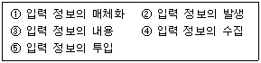
- ①→②→③→④→⑤
- ⑤→④→③→②→①
- ②→④→①→⑤→③
- ①→②→③→⑤→④
(정답률: 82%)
45. 파일 편성 중 랜덤 편성에 대한 설명으로 옳지 않은 것은?
- 키 변환을 위한 계산 과정이 필요 없으므로 지연 시간이 없다.
- 어떤 레코드라도 평균 접근 시간 내에 검색이 가능하다.
- 충돌 발생 우려에 대비하여 기억 공간의 확보가 필요하다.
- 특정 레코드 접근이 직접 가능하여 대화형 처리에 적합하다.
(정답률: 60%)
46. 시스템 평가(System Test)의 종류 중 다음 항목과 관계되는 것은?
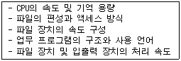
- 성능 평가
- 기능 평가
- 가격 평가
- 신뢰성 평가
(정답률: 77%)
47. 흐름도(Flowchart)의 종류 중 다음 설명에 해당하는 것은?
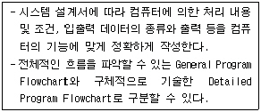
- 시스템 흐름도
- 프로그램 흐름도
- 프로세스 흐름도
- 블록 차트
(정답률: 55%)
48. 시스템에 대한 정의로 옳지 않은 것은?
- 예정된 기능을 수행하기 위하여 설계된 상호작용을 갖는 요소의 유기적 집합체이다.
- 어떤 목적을 위하여 하나 이상의 기능요소가 상호 관련하여 유기적으로 결합된 것이다.
- 공통의 목적에 의하여 공통의 목적에 기여할 수 있는 많은 부문으로 구성되는 복잡한 단일체이다.
- 상호 관련이 없는 구성요소가 조합되어 어떤 목적을 위하여 유기적으로 결합된 것이다.
(정답률: 71%)
49. 일시적인 성격을 지닌 정보를 기록하는 파일로 마스터 파일을 갱신 또는 조회하기 위해 작성하는 파일은?
- Transaction File
- Source File
- History File
- Trailer File
(정답률: 73%)
50. 사용자 인터페이스 설계를 위한 인간공학적 원리에 포함되지 않는 것은?
- 지름길을 제공한다.
- 작업의 진행 상황을 알려준다.
- 일관된 인터페이스를 가진다.
- 사용자의 비전문성을 인정하지 않는다.
(정답률: 84%)
51. HIPO에 대한 설명으로 옳지 않은 것은?
- 입력, 처리, 출력 관계를 시각적으로 기술한다.
- 체계적인 문서 작성이 가능하며, 보기 쉽고 알기 쉽다.
- 기능과 자료의 의존 관계를 동시에 표현할 수 있다.
- 유지보수 및 변경이 용이하며, 상향식 방식을 사용하여 나타낸다.
(정답률: 77%)
52. 표준 처리 패턴 중 다음 설명이 의미하는 것은?
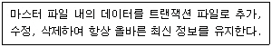
- Merge
- Conversion
- Update
- Extract
(정답률: 89%)
53. 프로세스 설계상의 일반적 유의사항으로 거리가 먼 것은?
- 프로세스 전개의 사상을 통일한다.
- 조작을 가능한 간결하도록 배려하고, 오퍼레이터의 개입을 적게 한다.
- 오류에 대비한 검사 시스템을 고려한다.
- 분류 처리를 가급적 최대화하여 사용자의 편의를 도모한다.
(정답률: 71%)
54. 모듈(Module)에 대한 설명으로 옳지 않은 것은?
- 적절한 크기로 작성한다.
- 보기 좋고, 이해하기 쉽게 작성한다.
- 모듈간의 기능적 결합도를 최대화한다.
- 업무 처리가 비슷한 처리에 부품처럼 공통으로 사용할 수 있다.
(정답률: 77%)
55. 코드 설계 단계 중 다음 고려사항과 가장 관계되는 것은?
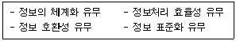
- 코드 목적 명확화
- 코드 대상 항목 결정
- 코드 대상 특성 분석
- 사용 범위 결정
(정답률: 35%)
56. 자료 사전에서 사용되는 기호의 의미로 옳은 것은?
- { } : 자료의 정의
- [ ] : 자료의 생략
- ( ) : 자료의 반복
- * * : 자료의 설명(주석)
(정답률: 81%)
57. 다음과 같은 방식으로 처리되는 코드는?
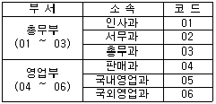
- Block Code
- Significant Digit Code
- Mnemonic Code
- Combined Code
(정답률: 63%)
58. 코드 오류 발생 형태 중 다음과 같이 좌우 자리가 바뀌어 발생하는 오류의 형태는?
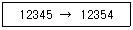
- Addition Error
- Omission Error
- Transcription Error
- Transposition Error
(정답률: 81%)
59. 시스템의 기본 요소 중 다음 설명에 해당하는 것은?
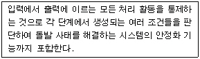
- Control
- Process
- Feedback
- Output
(정답률: 72%)
60. 파일 설계 순서로 옳은 것은?
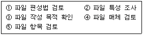
- ①→③→②→⑤→④
- ④→①→③→⑤→②
- ②→④→①→③→⑤
- ③→⑤→②→④→①
(정답률: 75%)
4과목: 운영체제
61. PCB에 대한 설명으로 옳지 않은 것은?
- 운영체제가 프로세스 관리를 위해 필요한 정보를 PCB에 수록한다.
- 프로세스가 생성될 때마다 해당 PCB가 생성되며, 프로세스가 소멸되어도 PCB는 소멸되지 않는다.
- PCB에는 프로세스 식별 번호, 프로세스 상태 정보, CPU 레지스터 정보 등이 수록되어 있다.
- “Process Control Block”을 의미한다.
(정답률: 84%)
62. 분산처리 시스템의 위상(Topology)에 따른 분류에서 성형(Star) 구조에 대한 설명으로 옳지 않은 것은?
- 터미널의 증가에 따라 통신 회선수도 증가한다.
- 중앙 노드 이외의 장애는 다른 노드에 영향을 주지 않는다.
- 각 노드들은 point-to-point 형태로 모든 노드들과 직접 연결된다.
- 제어가 집중되고 모든 동작이 중앙 컴퓨터에 의해 감시된다.
(정답률: 66%)
63. 구역성(Locality)에 대한 설명으로 옳지 않은 것은?
- 프로세스가 실행되는 동안 일부 페이지만 집중적으로 참조되는 경향을 말한다.
- 시간 구역성은 최근에 참조된 기억장소가 가까운 장래에도 계속 참조될 가능성이 높음을 의미한다.
- 공간 구역성은 하나의 기억장소가 참조되면 그 근처의 기억장소가 계속 참조되는 경향이 있음을 의미한다.
- 프로세스가 효율적으로 실행되기 위해 프로세스에 의해 자주 참조되는 페이지들의 집합을 말한다.
(정답률: 70%)
64. 운영체제에 대한 설명으로 옳은 것은?
- 운영체제는 컴퓨터 자원들인 기억장치, 프로세서, 파일 및 정보, 네트워크 및 보호 등을 효율적으로 관리할 수 있는 프로그램의 집합이다.
- 운영체제는 컴퓨터 하드웨어, 시스템 프로그램, 응용프로그램, 사용자 등으로 구성되어 있다.
- 자원할당 측면에서 운영체제의 주된 기능은 파일 관리, 입출력의 구현, 소스프로그램의 컴파일 및 목적코드 생성 등이다.
- 운영체제는 시스템 전체의 움직임을 감시, 감독 관리 및 지원하는 처리프로그램과 주어진 문제를 응용 프로그램 감독 하에 실제데이터 처리를 하는 제어프로그램으로 구성된다.
(정답률: 58%)
65. 다중 처리기 운영체제의 주/종(Master/Slave) 구조에서 각각의 기능에 대한 연결이 올바른 것은?
- Master : 입·출력 담당, Slave : 연산 및 입출력 담당
- Master : 연산 담당, Slave : 입출력 담당
- Master : 연산 담당, Slave : 연산 및 입출력 담당
- Master : 연산 및 입·출력 담당, Slave : 연산 담당
(정답률: 67%)
66. 사용자의 신원을 운영체제가 확인하는 절차를 통해 불법 침입자로부터 시스템을 보호하는 보안 유지 방식은?
- 외부 보안
- 운용 보안
- 사용자 인터페이스 보안
- 내부 보안
(정답률: 71%)
67. 운영체제의 운용 기법 중 시분할(Time-Sharing) 처리 시스템에 대한 설명으로 옳지 않은 것은?
- 하나의 CPU를 여러 개의 작업들이 일정한 시간 간격동안 사용함으로써 각각의 작업은 CPU를 공유한다.
- Round-Robin 방식이라고도 한다.
- 다중프로그래밍 방식과 결합하여 모든 작업이 동시에 진행되는 것처럼 대화식 처리가 가능하다.
- 시스템의 효율 향상을 위하여 작업량이 일정한 수준이 될 때까지 모아두었다가 한꺼번에 일시에 처리한다.
(정답률: 83%)
68. 페이징 기법에 대한 설명으로 옳지 않은 것은?
- 외부 단편화가 방지된다.
- 페이지의 위치 정보를 가지고 있는 페이지 맵 테이블이 필요하다.
- 프로그램을 가변적인 크기로 나눈 후 주기억장치에 적재시켜 실행시키는 기법이다.
- 내부 단편화가 발생할 수 있다.
(정답률: 55%)
69. 색인순차접근(Indexed Sequential Access) 방식의 구성 중 인덱스 영역(Index Area)에 해당하지 않는 것은?
- 마스터 인덱스(Master Index)
- 섹터 인덱스(Sector Index)
- 실린더 인덱스(Cylinder Index)
- 트랙 인덱스(Track Index)
(정답률: 66%)
70. LRU(Least Recently Used) 교체 알고리즘을 사용하고 페이지 참조의 순서가 다음과 같다고 가정할 경우 할당된 프레임의 수가 4개일 때 몇 번의 페이지 부재가 발생하는가?(단, 초기에는 기억장치가 모두 비어 있다고 가정한다.)
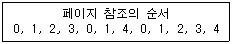
- 7
- 8
- 9
- 10
(정답률: 49%)
71. 모니터에 대한 설명으로 옳지 않은 것은?
- 공유 데이터와 이 데이터를 처리하는 프로시저로 구성된다.
- 한순간에 여러 프로세스가 모니터에 동시에 진입하여 자원을 공유할 수 있다.
- 모니터 외부의 프로세스는 모니터 내부의 데이터를 직접 액세스 할 수 없다.
- 모니터에서는 Wait와 Signal 연산이 사용된다.
(정답률: 65%)
72. 다음 현상은 무엇을 의미하는가?
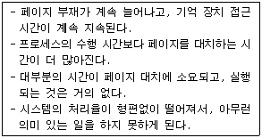
- Segmentation
- Locality
- Thrashing
- Monitor
(정답률: 82%)
73. UNIX의 특징으로 볼 수 없는 것은?
- 대화식 시분할 운영체제로 사용자는 단말 장치를 통하여 명령을 보내고, 그 응답을 받는다.
- 여러 개의 작업을 동시에 병행 처리할 수 있는 다중태스킹(Multitasking) 운영체제이다.
- 다중 사용자(Multiuser) 운영체제로 두 사람 이상의 사용자가 동시에 시스템을 사용할 수 있다.
- 시스템에서 사용할 드라이브가 안정되게 지원되도록 완벽한 PnP 기능을 제공한다.
(정답률: 71%)
74. 보안 메커니즘의 설계 원칙에는 개방된 설계, 최소 특권, 특권의 분할, 메커니즘의 경제성 등이 있다. 이 중 개방된 설계의 의미를 가장 적절하게 설명한 것은?
- 알고리즘은 알려졌으나, 그 키는 비밀인 암호 시스템의 사용을 의미한다.
- 트로이 목마로부터의 피해를 제한하기 위해 모든 주체는 업무 완수에 필요한 최소한의 특권만을 사용해야 한다.
- 가능하다면 객체에 대한 접근은 하나 이상의 조건을 만족하게 해야 한다.
- 가능한 한 기능 검증과 쉽게 정확한 구현을 할 수 있도록 간단히 설계한다.
(정답률: 60%)
75. 프로세스(Process)의 정의와 거리가 먼 것은?
- PCB의 존재로서 명시되는 것
- 동기적 행위를 일으키는 주체
- 프로시저가 활동 중인 것
- 실행중인 프로그램
(정답률: 72%)
76. 은행원 알고리즘에 대한 설명으로 옳지 않은 것은?
- “Dijkstra”가 제안한 방법이다.
- 교착상태 해결 방법 중 예방(Prevention) 기법이다.
- 자원의 양과 사용자(프로세스) 수가 일정해야 한다.
- “안전상태”와 “불안전상태”라는 두 가지 상태가 존재한다.
(정답률: 68%)
77. 다음 표와 같은 작업부하가 시간 0에 도착했을 경우 SJF 방식으로 스케줄링 할 때 평균 대기시간은?
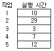
- 13시간
- 18시간
- 23시간
- 28시간
(정답률: 58%)
78. 주기억장치 관리기법 중 “Worst Fit” 기법 사용 시 20K의 프로그램은 주기억장치 영역 번호 중 어느 곳에 할당되는가?
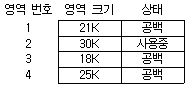
- 1
- 2
- 3
- 4
(정답률: 63%)
79. UNIX 시스템의 쉘(Shell)에 관한 설명으로 옳지 않은 것은?
- 사용자가 입력시킨 명령어 라인을 읽어 필요한 시스템 기능을 실행시키는 명령어 해석기이다.
- 쉘은 커널의 일부분으로 메모리에 상주하면서 사용자와 시스템 간의 대화를 가능케 해준다.
- 시스템과 사용자 간의 인터페이스를 제공한다.
- 공용 쉘이나 사용자 자신이 만든 쉘을 사용할 수 있다.
(정답률: 46%)
80. 임계구역의 원칙으로 옳지 않은 것은?
- 두 개 이상의 프로세스가 동시에 사용할 수 있다.
- 순서를 지키면서 신속하게 사용한다.
- 하나의 프로세스가 독점하게 해서는 안 된다.
- 임계구역이 무한 루프에 빠지지 않도록 주의해야 한다.
(정답률: 75%)
5과목: 정보통신개론
81. 패킷교환망에서 각 노드에서 들어온 패킷을 다른 모든 링크로 복사하여 전송하는 형태는?
- 고정 경로배정(Fixed Routing)
- 플러딩(Flooding)
- 임의 경로배정(Random Routing)
- 적응 경로배정(Adaptive Routing)
(정답률: 65%)
82. 다음 중 HDLC Frame의 구조 순서로 옳은 것은?(단, A : Address, F : Flag, C : Control, I : Information, FCS : Frame Check Sequence)
- I-C-A-F-FCS-F
- C-F-I-FCS-A-F
- F-A-C-I-FCS-F
- F-FCS-A-C-I-F
(정답률: 75%)
83. PCM 전송방식에서 신호의 최대주파수가 1000[Hz]일 때 표본화 주기[㎲]로 적합한 것은?
- 500
- 800
- 1000
- 2000
(정답률: 60%)
84. 오류를 제어할 때 수신측에서 오류의 검출의 정정 기능을 갖는 부호는?
- Hamming Code
- Parity Code
- BCD Code
- EBCDIC Code
(정답률: 79%)
85. 정보통신시스템의 구성 요소에 대한 설명으로 틀린 것은?
- CCU는 통신제어장치이다.
- MODEM은 변복조장치이다.
- DTE는 데이터 에러감시장치이다.
- DCE는 데이터 회선종단장치이다.
(정답률: 74%)
86. 다음 중 OSI 7계층에서 데이터링크 계층의 기능이 아닌 것은?
- 경로설정 및 다중화
- 오류의 검출 및 복구
- 프레임의 순서제어
- 데이터링크 접속의 설정 및 해제
(정답률: 53%)
87. 다음 중 데이터 통신시스템에서 전송계가 아닌 것은?
- 변·복조장치
- 데이터 전송회선
- 중앙처리장치
- 통신제어장치
(정답률: 75%)
88. 이동통신에서 전파의 세기는 거리가 멀어질수록 점점 약해지므로, 일정거리 이상 떨어진 두 셀에서는 서로간의 간섭이 적어 동일한 주파수 채널을 다시 사용하는 것을 무엇이라 하는가?
- 위치 등록
- 다이버시티
- 셀 통합
- 주파수 재사용
(정답률: 72%)
89. 다음 중 전파의 VHF 대역으로 옳은 것은?
- 30GHz∼300GHz
- 3GHz∼30GHz
- 300MHz∼3GHz
- 30MHz∼300MHz
(정답률: 51%)
90. 다음 중 LAN의 전송매체로 가장 대역폭이 큰 것은?
- 나선 케이블
- 동축 케이블
- 광섬유 케이블
- UTP 케이블
(정답률: 81%)
91. 다음 중 잡음(Noise)의 범주에 속하지 않는 것은?
- 누화잡음
- 백색잡음
- 냉각잡음
- 충격성잡음
(정답률: 71%)
92. 다음 중 프로토콜의 기본적인 구성 요소가 아닌 것은?
- 처리(Process)
- 구문(Syntax)
- 의미(Semantics)
- 타이밍(Timing)
(정답률: 61%)
93. 데이터 통신에서 채널의 통신 용량을 늘리는 방법이 아닌 것은?
- 잡음 세기를 줄인다.
- S/N 비를 낮춘다.
- 신호 전력을 높인다.
- 대역폭을 넓힌다.
(정답률: 66%)
94. 진폭변조를 사용하는 변조기의 변조 속도가 1200[Baud]이고, 디비트(Dibit)를 사용한다면 통신속도[bps]는?
- 1200
- 2400
- 4800
- 9600
(정답률: 70%)
95. 다음 중 전송 장애의 주요 요인이 아닌 것은?
- 신호 감쇄
- 시간 지연
- 잡음
- 변·복조
(정답률: 70%)
96. 다음 중 망자원의 효율적인 이용을 목적으로 사용되는 트래픽 제어기술에 속하지 않는 것은?
- Flow Control
- Congestion Control
- Deadlock Avoidance
- Routing
(정답률: 59%)
97. 아날로그 신호를 디지털 신호로 변환하기 위한 PCM 주요 과정에 속하지 않는 것은?
- 양자화
- 동기화
- 부호화
- 표본화
(정답률: 81%)
98. 다음 중 인터넷 TCP/IP 구조와 관련되는 프로토콜이 아닌 것은?
- SNA
- UDP
- ICMP
- ARP
(정답률: 58%)
99. 다음 중 회선교환방식에 대한 설명으로 틀린 것은?
- 속도나 코드변환이 용이하다.
- 점대점 방식의 네트워크 구조를 갖는다.
- 패킷교환방식에 비해 접속에는 다소 시간이 소요되나 전송지연은 거의 없다.
- 고정적인 대역폭을 갖는다.
(정답률: 40%)
100. 다음 중 정보통신의 발달에 큰 기여를 하였던 미국 항공 회사의 좌석 예약 시스템은 ?
- SAGE
- ODYSSEY
- SABRE
- ALOHA
(정답률: 59%)